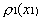
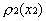
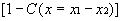

D:\Rubin\public_html\nacphy\ComPhys\PACKETS\Movies\SquareWell\Correlation\index.
Correlation Function and Two-Particle Density
Definition C(x):
=   
- x= ?: x1 and x2
cover all space for wavepackets
- Fewer problems with 3D C:
m-10m Scattering
Overlaid Single-Particle and with C(x),
mov, gif
Side by Side Wavepacket and correlation C(x), gif
2-Particle (3D) Correlations
Comparison versus
3D Correlation
Function
m-m Scattering
Comparison and